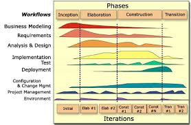

Menurut (Prabowo, 2020) dalam bukunya yang berjudul Metodologi Pengembangan Sistem Informasi, RUP (Rational Unified Process) didefinisikan sebagai suatu kerangka kerja yang berkaitan dengan proses pengembangan software secara iteratif. RUP dibuat oleh Rational software, suatu divisi dari IBM sejak 2003, dan merupakan sebuah proses pengembangan software berorientasi objek, juga dikenal menjadi model Proses Terpadu. RUP bisa meningkatkan produktivitas tim untuk memberikan kesempatan pada setiap anggota untuk bisa mengakses secara praktis ke Asalnya dengan berdasarkan pada panduan, template, dan pembimbingan alat untuk proses krusial dalam kegiatan pengembangan. RUP juga adalah salah satu model pengembangan perangkat lunak berulang, yang memberikan tugas serta tanggung jawab pada sebuah organisasi dalam upayanya buat memastikan bagaimana proses produksi perangkat lunak yang berkualitas tinggi, dimana hal tadi bisa menunjang serta menjawab kebutuhan pengguna dengan perkiraan jadwal serta aturan yang bisa disusun terlebih dahulu. Sedangkan menurut (Basri, Mahmood, & Kama, 2020) dalam bukunya yang berjudul Software Requirement Change Effort Estimation, RUP (Rational Unified Process) merupakan model use-case driven yang dirancang dengan memperhatikan hal-hal yang berkaitan dengan persyaratan terkait dengan proses pengembangan perangkat lunak berorientasi objek
Pada awalnya, model RUP dikembangkan pada tahun 1990-an oleh Rational Software, dan pada prosesnya kemudian dikenal sebagai model Rational Unified Process. Pada prosesnya, model ini terus mengalami beberapa pembaharuan serta dilakukan berbagai ditingkatkan dalam upaya untuk mencerminkan proses praktik terbaik dan pengalaman pengembangan perangkat lunak terbaru. RUP merangkum sembilan disiplin inti dengan model yaitu;
- Pemodelan Bisnis
- Persyaratan
- Analisis dan Desain
- Penerapan
- Tes
- Penyebaran
- Manajemen Proyek
- Konfigurasi dan Manajemen Perubahan
- Lingkungan
RUP menggunakan Unified Modelling Language (UML) dalam upaya untuk menggambarkan pemodelan secara luas, yang terdiri dari sekumpulan notasi grafis. Saat ini, UML sudah menjadi alat standar industri yang digunakan untuk pemodelan berorientasi objek. Menurut (Prabowo, 2020), RUP menjalankan disiplin dalam empat fase berikut. Berikut penjelasan di balik empat fase tersebut, dan perlu dipahami bahwa setiap fase mendukung beberapa iterasi sehubungan dengan sembilan prinsip inti.
- Inception
Inception merupakan tahap awal untuk mengidentifikasikan sistem seperti apa yang akan dikembangkan. Dimana dalam fase ini pengembangan perangkat lunak dituntut untuk bisa melakukan interaksi dengan pelanggan, sebagai langkah awal mengidentifikasikan kebutuhan sistem yang hendak dibuat. Langkah ini penting dengan tujuan agar para pengembang perangkat lunak memiliki kesamaan pemahaman antara sistem yang akan dibuat dengan kebutuhan pengguna. Pada fase ini, fokus dititik beratkan pada cakupan dan tujuan proyek. Ada 5 tahap iterasi kerja yang dilakukan developer pada fase ini, yaitu :
- Business Modelling and Requirements : proses analisa, perumusan, dan membuat rencana, cakupan, dan kebutuhan utama.
- Analysis : studi kelayakan proyek yang akan berlangsung
- Design : perancangan konsep teknis
- Implementation : pembuatan prototype konsep
- Test : tes belum dibutuhkan pada fase ini
- Elaboration
Elaboration merupakan tahap untuk melakukan proses desain secara lengkap berdasarkan hasil analisa yang sudah dilakukan pada tahap inception. Fase ini belum masuk ke tahap pembuatan perangkat lunak secara langsung, tetapi lebih fokus kepada pemantapan fokus terhadap konsep peninjauan kembali terhadap pembuatan rencana-rencana yang sudah ditentukan. Dengan demikian, diharapkan proyek yang berjalan bisa menekan berbagai kemungkiann risiko. Pada dasarnya fase ini berfokus pada penentuan requirement yang didapat dan menentukan strukturisasi sistem. Ada 5 tahap iterasi kerja yang dilakukan developer pada fase ini, yaitu :
- Business Modelling and Requirements : perbaikan cakupan dari kebutuhan sistem
- Analysis : analisa kebutuhan sistem dan cara membangunnya
- Design : pembuatan arsitektur yang baik
- Implementation : pembuatan garis besar arsitektur
- Test : tes atau pengujian garis besar arsitekutr yang sudah dibuat
- Construction
Construction merupakan tahap untuk mengimplementasikan hasil desain dan melakukan pengujian terhadap hasil implementasi yang sudah dibuat sebelumnya. Pada tahap awal, sebaiknya diperiksa kembali hasil analisis dan desain terutama desain pada sequence diagram, class diagram, component dan deployment. Jika desain yang sudah dibuat sesuia dengan analisis sistem, maka implementasi design dengan menggunakan bahasa pemograman tertentu sudah bisa dilakukan. Tujuan fase ini adalah membangun sistem perangkat lunak. Ada 5 tahap iterasi kerja yang dilakukan developer pada fase ini, yaitu :
- Business Modelling and Requirements : analisa lebih lanjut tentang kebutuhan proyek yang mungkin belum terpikirkan
- Analysis : penyelesaian analsiis model
- Design : penyelesaian desain model
- Implementation : membangun initial Operational Capability
- Test : pengetesan Operational Capability yang sudah dibuat sebelumnya
- Transition
Tujuan tahap ini adalah mematangkan produk akhir yang sudah selesai, dimana hal ini diperlukan untuk dilakukan analisa apakah perangkat lunak yang dibuat sudah sesuai dengan kebutuhan pengguna yang diinginkan atau mungkin terdapat kesalahan atau kekurangan yang perlu diperbaiki. Fase transition berhubungan dengan proses instalasi dan rollout. Ada 5 tahap iterasi kerja yang dilakukan developer pada fase ini, yaitu :
- Business Modelling and Requirements : seharusnya tidak perlu digunakan lagi, karena merupakan fase akhir. Tetapi tetap bisa digunakan jika dibutuhkan
- Analysis : seharusnya sudah selesai pada fase construction, sehingga sudah tidak digunakan lagi. Tetapi tetap bisa digunakan jika dibutuhkan
- Design : modifikasi desain sistem jika ditemukan masalah selama proses testing
- Implementation : penyesuaian setelan perangkat lunak agar bisa dipakai disisi pengguna (misalnya proses install dan setting database di server pengguna, penyesuaian setting (IP), dan melakukan perbaikan coding yang ditemukan selama proses testing berlangsung
- Test : proses terhadap perangkat lunak, sekaligus testing akhir pengguna
Meskipun RUP menggambarkan pendekatan iteratif dan incremental buat pengembangan aplikasi, akan tetapi sejatinya RUP bukanlah pendekatan yang tangkas melainkan berisi panduan yang kuat tentang kapan dan bagaimana melakukan pekerjaan. Penulis RUP secara eksplisit menyatakan keyakinan bahwa pengembangan perangkat lunak “harus diatur di sekitar keterampilan individu yang sangat terlatih” dengan sedikit “pedoman dalam kebijakan serta prosedur” adalah “sangat keliru “. Seiring waktu, semakin banyak detail ditambahkan ke RUP, termasuk deskripsi tentang cara mendukung proses menggunakan Rational Development Tools. Versi final 7.0 diterbitkan di tahun 2005. Hari ini, RUP masih cukup populer tetapi tidak lagi didukung oleh Rational atau perusahaan ratentnya IBM (Kneuper, 2018).
Sumber
- Prabowo, M. (2020). Metodologi Pengembangan Sistem Informasi. Salatiga: LP2M IAIN Salatiga.
- Basri, S., Mahmood, Y., & Kama, M. (2020). Software Requirement Change Effort Estimation. India: Exceller Books.
- Kneuper, R. (2018). Software Processes and Life Cycle Models, an Introduction to Modelling, Using and Managing Agile, Plan-Driven and Hybrid Processes. Darmstadt: Springer.
- http://www.toolshero.com
Kembali
RUP
BMI
Calculator